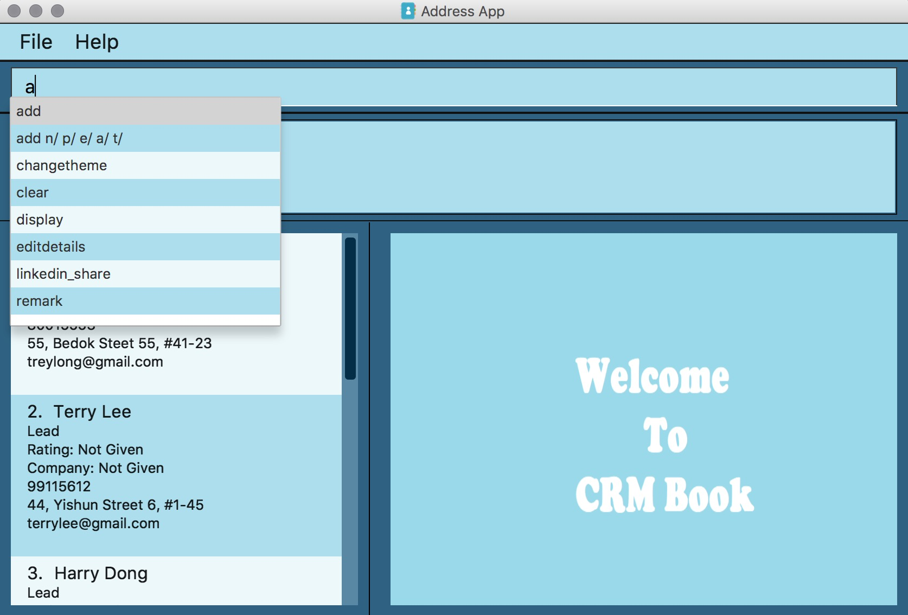

1. Introduction
A CRM System is a Customer Relationship Management system, mainly used in the real world by Sales and Marketing teams to manage their business-customer relationships, as well as to manage business contacts, employees, clients, contract wins and sales leads. Some examples of popular CRMs include Salesforce, SAP, and Microsoft Dynamics CRM.
A common complaint against such traditional CRMs is that they are large, contain too many functionalities, and in some cases even require additional training before using. (Search for: Salesforce Trailhead)
The CRM Book application aims to assist Salespeople by implementing the most important functionality of a CRM System, that is, managing their business contacts and clients. In a CRM, business contacts are seperated into two categories, Leads and Contacts. Leads are people that the salesperson has sold to in the past, while Contacts are people whom the salesperson has sold to before, even if the company they represent may no longer purchase the product. Also, accounts represent Companies.
Some unique features of this CRM in v1.5 that benefits the individual Salesperson even more is an enhanced detection of duplicates through fields such as email and phone number, importing of a CSV file of leads that the salesperson may have bought through a mailing list or obtained through a tradeshow, sharing of posts about their company through LinkedIn, as well as seeing directions to their Lead’s office through Google Maps. It is important to note that these features all enhance the experience of the salesperson, and does not distract from the core functionality of managing their relationship with their leads and contacts.
Future releases of the CRM Book would include the ability to schedule meetings through a Calendar, integration with other Social Media networks to post company related news, allowing a client to choose a meeting slot among a few that the salesperson has specified, and also manage the contracts that tie a Contact to an account.
More importantly, CRM Book is optimized for those who prefer to work with a Command Line Interface (CLI) while still having the benefits of a Graphical User Interface (GUI). If you can type fast, CRM Book can get your contact management tasks done faster than traditional GUI apps.
Interested? Jump to the Section 2, “Quick Start” to get started. Enjoy!
2. Quick Start
-
Ensure you have Java version
1.8.0_60or later installed in your Computer.Having any Java 8 version is not enough.
This app will not work with earlier versions of Java 8. -
Download the latest
crmbook.jarhere. -
Copy the file to the folder you want to use as the home folder for your Address Book.
-
Double-click the file to start the app. The GUI should appear in a few seconds.
 -
Type the command in the command box and press Enter to execute it.
e.g. typinghelpand pressing Enter will open the help window. -
Some example commands you can try:
-
list: lists all Leads and Contacts -
addn/John Doe p/98765432 e/johnd@example.com a/John street, block 123, #01-01: adds a Lead namedJohn Doeto the Address Book. -
delete3: deletes the 3rd person shown in the current list -
exit: exits the app
-
-
Refer to Section 3, “Features” for details of each command.
3. Features
-
In v 1.2: Able to add Leads into CRM book and convert Leads into Contacts. All commands can be performed using its respective aliases. Able to start process of LinkedIn Integration. Able to generate a color for the tags added. Able to add/remove/edit the remark of a person.
-
In v 1.3: Able to detect a duplicate based on a phone number. Able to fully authenticate linkedIn, and share posts to LinkedIn. All alias commands will be completed. Auto-Complete of commands enabled. Able to sort all persons in list by name alphabetically.
-
In v 1.4: Added Accounts. Made CRMBook look nicer.
-
In v 1.5: Able to find phone numbers. Able to change theme dynamically.
-
Coming in v2.0: Functional CRM, with Leads, Contacts, and Accounts. Events (such as meetings) play a role in alerting salesperson if a person needs to be reached out to. Data enrichment. Google Maps integration to show a salesperson how to get to a Lead’s office. There are multiple themes for user to choose from. Google Maps. Adds a parent company tag to Leads and Contacts if their company has a parent company. Example: Leads and Contacts from Skype and Nokia will have an additional tag called Microsoft.
Command Format
-
Words in
UPPER_CASEare the parameters to be supplied by the user e.g. inadd n/NAME,NAMEis a parameter which can be used asadd n/John Doe. -
Items in square brackets are optional e.g
n/NAME [t/TAG]can be used asn/John Doe t/friendor asn/John Doe. -
Items with
… after them can be used multiple times including zero times e.g.[t/TAG]…can be used ast/friend,t/friend t/familyetc. -
Parameters can be in any order e.g. if the command specifies
n/NAME p/PHONE_NUMBER,p/PHONE_NUMBER n/NAMEis also acceptable.
3.1. Viewing help: h, help
Format: h, help
3.2. Log in to LinkedIn: linklog, linkedin_login
Format: 'linklog', 'linkedin_login'
| A LinkedIn Login is required if you want to share posts to linkedIn. If this is your first login, you will also have to give permissions for CRM Book in LinkedIn via a pop up. |
3.3. Share a Post on LinkedIn: linkshare, linkedin_share
Format: 'linkshare [content]', 'linkedin_share [content]'
| This command will allow you to share a post on LinkedIn to all your connections. This will allow you to share any interesting marketing materials your company may be involved in quickly. |
3.4. Adding a Lead: a, add
Adds a Lead to the CRM
Format: a n/NAME p/PHONE_NUMBER e/EMAIL a/ADDRESS [t/TAG]…, add n/NAME p/PHONE_NUMBER e/EMAIL a/ADDRESS [t/TAG]…
|
A Lead can have any number of tags (including 0). To note, to create a Contact, a Lead must be converted; see convert. |
Examples:
-
add n/John Doe p/98765432 e/johnd@example.com a/John street, block 123, #01-01 -
add n/Betsy Crowe t/friend e/betsycrowe@example.com a/Newgate Prison p/1234567 t/criminal -
a n/Jake Tan t/friend e/jaketan@example.com a/Simei Street 1, block 999, #09-09 p/1234567
3.5. Listing all persons : l, list
Shows a list of all Leads and Contacts in the CRM.
Format: l, list
3.6. Displaying all Leads or all Contacts: disp, display
Shows a list of either Leads or Contacts in the CRM.
Format: disp Lead, display Lead, disp Contact, display Contact
3.7. Editing a person : e, edit
Edits an existing Lead or Contact in the address book.
Format: e INDEX [n/NAME] [p/PHONE] [e/EMAIL] [a/ADDRESS] [t/TAG]…, edit INDEX [n/NAME] [p/PHONE] [e/EMAIL] [a/ADDRESS] [t/TAG]…
Examples:
-
edit 1 p/91234567 e/johndoe@example.com
Edits the phone number and email address of the 1st person to be91234567andjohndoe@example.comrespectively. -
edit 2 n/Betsy Crower t/
Edits the name of the 2nd person to beBetsy Crowerand clears all existing tags. -
e 2 p/99990000 e/johndoe@example.com
Edits the phone number and email address of the 1st person to be99990000andjohndoe@example.comrespectively.
3.8. Adding nonessential details of a person : adddetails
Edits an existing person in the address book.
For Leads, format: adddetails INDEX [c/COMPANY] [i/INDUSTRY] [r/RATING (number from 1 to 5)] [t/TITLE] [w/WEBSITE]
For Contacts, format: adddetails INDEX [c/COMPANY] [d/DEPARTMENT] [t/TITLE]
Examples:
-
adddetails 1 c/Macrosoft r/4
For the first person, makes Macrosoft the company and sets the rating to 4. This person must be a Lead. -
adddetails 2 d/IT t/Mr.
Sets the department of the 2nd person to beITand sets the title toMr.. This person must be a Contact.
3.9. Editing nonessential details of a person : editdetails
Edits an existing person in the address book.
For Leads, format: editdetails INDEX [c/COMPANY] [i/INDUSTRY] [r/RATING (number from 1 to 5)] [t/TITLE] [w/WEBSITE]
For Contacts, format: editdetails INDEX [c/COMPANY] [d/DEPARTMENT] [t/TITLE]
Examples:
-
editdetails 1 c/Macrosoft r/4
For the first person, changes the company to Macrosoft and sets the rating to 4. This person must be a Lead. -
editdetails 2 d/IT t/Mr.
Edits the department of the 2nd person to beITand sets the title toMr.. This person must be a Contact.
3.10. Converting a person : con, convert
Converts an existing Lead in the address book to a Contact. For further description of Leads and Contacts, see the Introduction
Format: con INDEX, convert INDEX
Examples:
-
convert 2
Converts the 2nd person in the list to a Contact. -
con 4
Converts the 4th person in the list to a Contact.
3.11. Adding an Account to a Contact : account
Adds an Account to a Contact.
Format: account INDEX an/ACCOUNTNAME
Examples:
-
account 2 an/Macrosoft
Adds the Account Macrosoft to the 2nd person in the list
3.12. Locating persons by name: f, find
Finds persons whose key information contain any of the given keywords.
Format: f KEYWORD [MORE_KEYWORDS], find KEYWORD [MORE_KEYWORDS]
Examples:
-
find John
ReturnsjohnandJohn Doe -
find 99881234
Returns the Lead or Contact with the phone number99881234 -
find Betsy Tim John
Returns any person having namesBetsy,Tim, orJohn -
find johntan@gmail.com
Returns the Lead or Contact with the email addressjohntan@gmail.com
3.13. Deleting a person : d, delete
Deletes the specified person from the address book.
Format: d INDEX, delete INDEX
Examples:
-
list
delete 2
Deletes the 2nd person in the CRM -
list
d 4
Deletes the 4th person in the CRM -
find Betsy
delete 1
Deletes the 1st person in the results of thefindcommand
3.14. Selecting a person : s, select
Selects the person identified by the index number used in the last Leads/Contacts listing.
Format: s INDEX, select INDEX
Examples:
-
list
select 2
Selects the 2nd person in the CRM Book -
list
select 4
Selects the 4th person in the CRM Book -
find Betsy
select 1
Selects the 1st person in the results of thefindcommand
3.15. Importing a CSV file: i, import
When you have a CSV file of Leads, you can directly import the file to the CRM Book without adding them one by one.
Format: i PATH, import PATH
Examples:
-
import ./sample.csv
Imports the filesample.csvto the CRM Book
3.16. Listing entered commands : hist, history
Lists all the commands that you have entered in reverse chronological order.
Format: hist, history
|
Pressing the ↑ and ↓ arrows will display the previous and next input respectively in the command box. |
3.17. Undoing previous command : u, undo
Restores the address book to the state before the previous undoable command was executed.
Format: u, undo
|
Undoable commands: those commands that modify the CRM Book’s content ( |
Examples:
-
delete 1
list
undo(reverses thedelete 1command) -
select 1
l
undo
Theundocommand fails as there are no undoable commands executed previously. -
select 1
l
u
Theundocommand fails as there are no undoable commands executed previously. -
delete 1
clear
undo(reverses theclearcommand)
undo(reverses thedelete 1command)
3.18. Redoing the previously undone command : r, redo
Reverses the most recent undo command.
Format: r, redo
Examples:
-
delete 1
undo(reverses thedelete 1command)
redo(reapplies thedelete 1command) -
delete 1
redo
Theredocommand fails as there are noundocommands executed previously. -
delete 1
r
Theredocommand fails as there are noundocommands executed previously. -
delete 1
clear
undo(reverses theclearcommand)
undo(reverses thedelete 1command)
redo(reapplies thedelete 1command)
redo(reapplies theclearcommand)
3.19. Clearing all entries : c, clear
Clears all entries from the CRM.
Format: c, clear
3.20. Exiting the program : ex, exit
Exits the program.
Format: ex, exit
3.21. Add or remove a remark to a Lead or Contact: rem, remark
Adds or removes a remark to a particular Lead or Contact.
Format to add remark: rem [INDEX] r/[KEYWORD], remark [INDEX] r/[KEYWORD]
Examples:
-
rem 1 r/Happy
Adds the remark 'Happy' to the 1st Lead or Contact. -
remark 4 r/
Removes the remark of the 4th Lead or Contact.
3.22. Sort persons by name in alphabetical order: st, sort
Sorts all persons in CRM Book by name.
Format: st, sort
3.23. Change theme: changetheme [since v1.4]
Changes color theme of CRM Book to the user specified theme. Currently, there are three themes, namely dark, light and blue.
The blue theme is the default theme. When user opens CRM Book for the first time, blue theme will be on display.
If the user changes the theme, it will be saved in user preferences so that CRM Book will display the user preferred theme in subsequent runs.
Format: changetheme THEME
Example: changetheme light
3.24. Saving the data
Address book data are saved in the hard disk automatically after any command that changes the data.
There is no need to save manually.
3.25. Setting current location: set_office_address, setA
Sets the current office address for Google Maps
Format: `setA a/ADDRESS
| Setting this address is required if you want to see the Google Map directions to a customer’s location |
3.26. Get directions to customer’s office: commandless
In order to use this, you must have an office address set. You can then either click on a person card or use the select command in order to view the Google Maps directions.
| If a person card was selected while the office location is set, you have to select a different person card to see the map |
| Success of this command is also dependent on the success of Google intepreting the address entered |
4. FAQ
Q: How do I transfer my data to another Computer?
A: Install the app in the other computer and overwrite the empty data file it creates with the file that contains the data of your previous CRM folder.
5. Command Summary
-
Add
a n/NAME p/PHONE_NUMBER e/EMAIL a/ADDRESS [t/TAG]…,add n/NAME p/PHONE_NUMBER e/EMAIL a/ADDRESS [t/TAG]…
e.g.a n/John Tan p/99991111 e/johntan@example.com a/123, Tampines Rd, 54321 t/colleague -
AddDetails : For Leads:
adddetails INDEX [c/COMPANY] [i/INDUSTRY] [r/RATING (number from 1 to 5)] [t/TITLE] [w/WEBSITE]
For Contacts:adddetails INDEX [c/COMPANY] [d/DEPARTMENT] [t/TITLE] -
Change Theme :
changetheme THEME
e.g.changetheme dark -
Clear :
c,clear -
Convert :
con INDEX,convert INDEX -
Delete :
d INDEX,delete INDEX
e.g.d 5,delete 3 -
Display :
disp KEYWORD,display KEYWORD
e.g.disp Lead,display Contact -
Edit :
e INDEX [n/NAME] [p/PHONE_NUMBER] [e/EMAIL] [a/ADDRESS] [t/TAG]…,edit INDEX [n/NAME] [p/PHONE_NUMBER] [e/EMAIL] [a/ADDRESS] [t/TAG]…
e.g.e 1 n/John Tan e/johntan@example.com
e.g.edit 2 n/James Lee e/jameslee@example.com -
EditDetails : For Leads:
editdetails INDEX [c/COMPANY] [i/INDUSTRY] [r/RATING (number from 1 to 5)] [t/TITLE] [w/WEBSITE]
For Contacts:editdetails INDEX [c/COMPANY] [d/DEPARTMENT] [t/TITLE] -
Exit :
ex,exit -
Find :
f KEYWORD [MORE_KEYWORDS],find KEYWORD [MORE_KEYWORDS]
e.g.f Chris,find James Jake,f 99881122,find john@gmail.com -
Help :
h,help -
History :
hist,history -
Import :
i PATH,import PATH -
Linkedin_login :
linklog,linkedin_login -
Linkedin_share :
linkshare [content],linkedin_share CONTENT -
List :
l,list -
Redo :
r,redo -
Remark :
rem,remark -
SetOfficeAddress :
set_office_address a/ADDRESS,setA a/ADDRESS -
Select :
s INDEX,select INDEX
e.g.s 1,select 2 -
Sort :
st,sort -
Undo :
u,undo